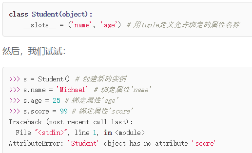

1、@__slots__
限制实例动态定义属性的范围

2、@property
把方法变成属性，使得方法的实现像属性一样简单

3、多重继承MixIn(类似java的接口)
class MyTCPServer(TCPServer, ForkingMixIn):
pass
由于Python允许使用多重继承，因此，MixIn就是一种常见的设计。只允许单一继承的语言（如Java）不能使用MixIn的设计
4、自定义类
- __str__():自定义实例打印输出,返回用户看到的字符串
- __repr__():返回程序员看到的字符串，调试使用
#！/usr/bin/
#-*- coding:utf-8 -*-
class Student(object):
def __init__(self,name):
self.name = name
def __str__(self):
return "Student object (name:%s) " % self.name
__repr__ = __str__
print(Student("YabinLi"))
3.__iter__ (): 使对象实例像list一样可以被for循环迭代遍历
__iter__() 方法返回迭代对象
之后for循环不断地调用迭代对象的__next__() 方法获取循环的下一个的值
4. __getitem__() 从实例对象中取出指定索引的[]
# __iter__&&__next__()
class Fib():
def __init__(self):
self.a,self.b = 0,1
def __iter__(self):
return self
def __next__(self):
self.a,self.b = self.b,self.a+self.b
# self.a +=1
if self.a > 100:
raise StopIteration()
return self.a
def __getitem__(self,n):
a,b = 1,1
for x in range(n):
a,b = b,a+b
return a
for n in Fib():
print(n)
print(Fib()[6])
5、__getattr__():当实例尝试调用不存在的属性时，python会尝试调用__getattr_()来获取返回值
可以针对完全动态的情况作调用
6、__call__